IT Professional with Web Development & Document Control Experience
I am Fergian Bintan Fahrevy Ramadhan, an Informatics Engineering student based in Batam with experience in web development, IT support, document control, logistics operations, reporting, and data management. I build digital solutions while helping teams manage structured information and improve operational workflows.
About Me
A focused professional profile for engineering, project documentation, logistics operations, and data-driven work environments.
Professional Summary
I have a strong foundation in document control, quality documentation, and logistics operations. My work experience includes managing controlled documents, maintaining revision records, distributing documents to authorized personnel, monitoring work requests, and preparing operational reports.
Career Direction
I am building my career toward Project Document Control, Engineering Documentation, Project Support, and data-driven operations. My background in Informatics Engineering helps me work with structured data, digital tools, process documentation, and continuous improvement.
Work Experience
Practical experience in documentation, operations, reporting, coordination, and controlled information flow.
Document Control
- Managed and organized controlled documents to support project and quality documentation processes.
- Ensured documents were properly labeled, updated, stored, distributed, and retrieved when needed.
- Maintained revision history and version control to prevent the use of outdated or unauthorized documents.
- Supported compliance with documentation standards, project requirements, and audit readiness.
Dispatcher Processing
- Received, recorded, classified, and prioritized work requests or operational reports.
- Verified initial data completeness and validity before task distribution.
- Monitored work progress until completion and escalated issues when needed.
- Documented operational activities and prepared reports to support workflow visibility.
Education & Organization
Academic foundation in Informatics Technology with active student organization experience.
Bachelor of Informatics Technology
Current GPA: 3.60 / 4.00. Relevant interests include programming, data science, access networks, structured documentation, and digital process improvement.
HMTI Member
Active member supporting seminars, workshops, IT competitions, student activities, documentation, event coordination, and team-based organizational programs.
Soft Skills
Professional strengths that support effective communication, collaboration, problem-solving, and performance in dynamic work environments.
Hard Skills
A combination of software development, IT support, document control, and operational technology skills.
Tools & Technologies
Tools and technologies used for software development, productivity, documentation, and IT support activities.
 Visual Studio Code
Visual Studio Code GitHub
GitHub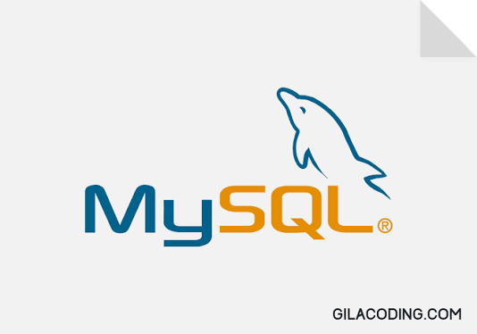
MySQL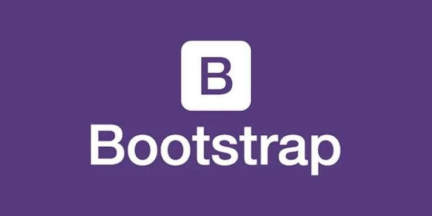
Bootstrap JavaScript
JavaScript HTML
HTML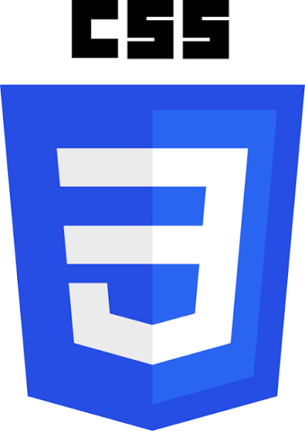
CSS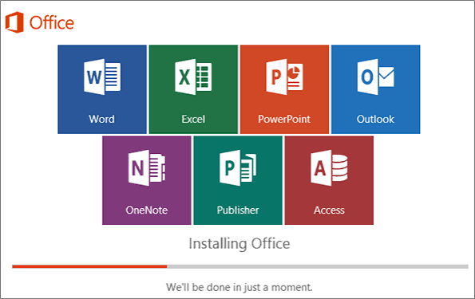
Microsoft Office 365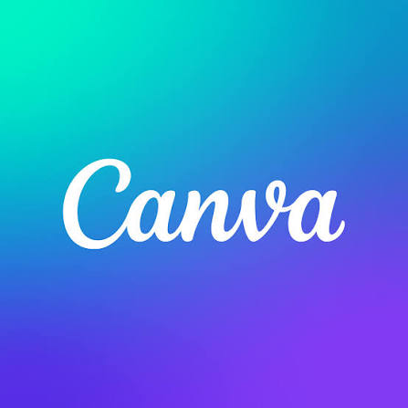
Canva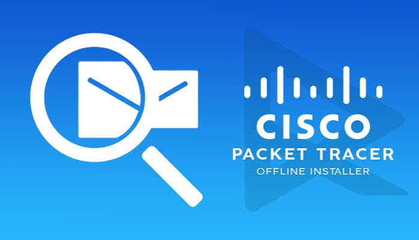
Cisco Packet Tracer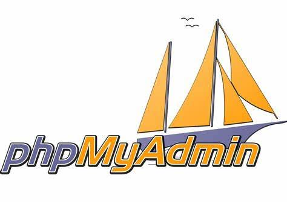
phpMyAdminPortfolio Focus
A showcase of my experience in web development, digital solutions, document control, operational workflows, and technology-driven process improvement.
Web Development & Information Systems
Experience developing web-based applications using PHP, MySQL, HTML, CSS, JavaScript, and Bootstrap for information management and operational solutions.
Professional Document Control
Experience managing controlled documents, revision tracking, file organization, document distribution, and quality documentation processes to support operational requirements.
Operations Workflow Monitoring
Experience monitoring operational activities, validating information, coordinating task progress, escalating issues, and preparing reports to improve workflow visibility.
Data Processing & Technology Exploration
Exploring data processing, analytical workflows, and technology tools to support data-driven decision making and digital solution development.
Featured Projects
Real projects showcasing my experience in web development, database systems, and digital solutions.
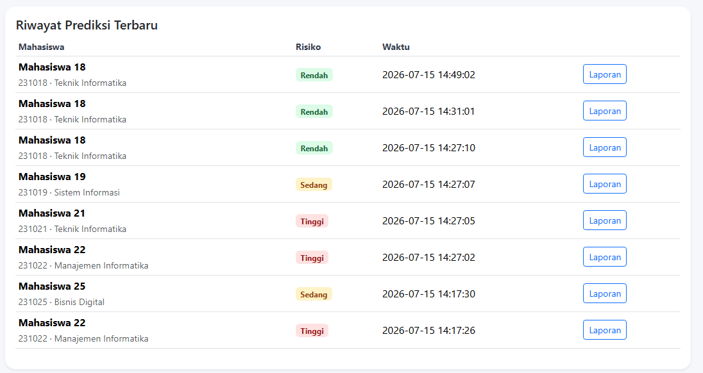
🚀 Personal ProjectStudent Dropout Monitoring System
Web-based system to monitor student development data and support academic decision making.
Technology: PHP, MySQL, Bootstrap, JavaScript
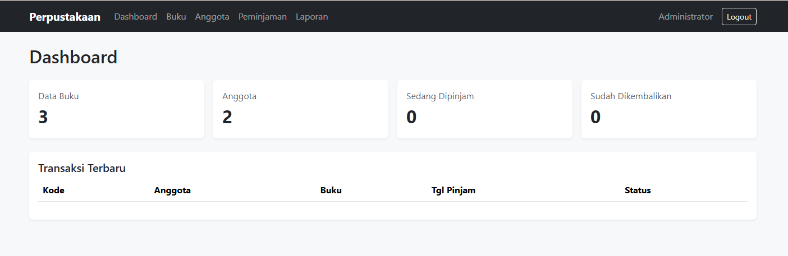
📚 Information SystemLibrary Management System
Digital library platform for managing books, members, borrowing records, and transactions.
Technology: PHP, MySQL, Bootstrap
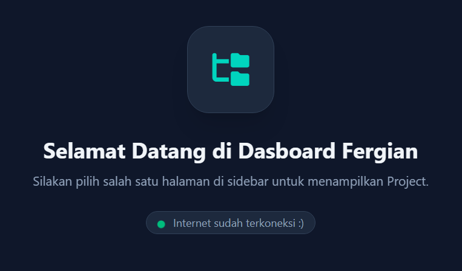
📊 DashboardPersonal Project Dashboard
Interactive dashboard concept for organizing technology projects and information.
Technology: HTML, CSS, JavaScript
Certificates
Professional certificates supporting technical growth and career development.
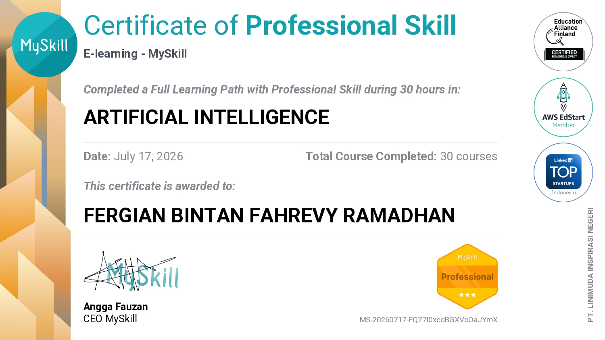
🏆 CertificateArtificial Intelligence
MySkill Professional Skill Certificate
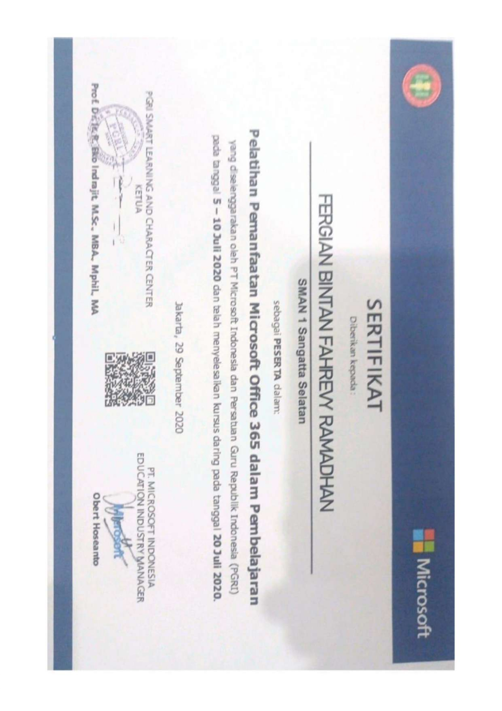
🏆 CertificateMicrosoft Office 365 Training
Professional productivity tools training certificate.
Contact
Open to Document Controller, Project Document Controller, Project Support, and Operations Administration opportunities.